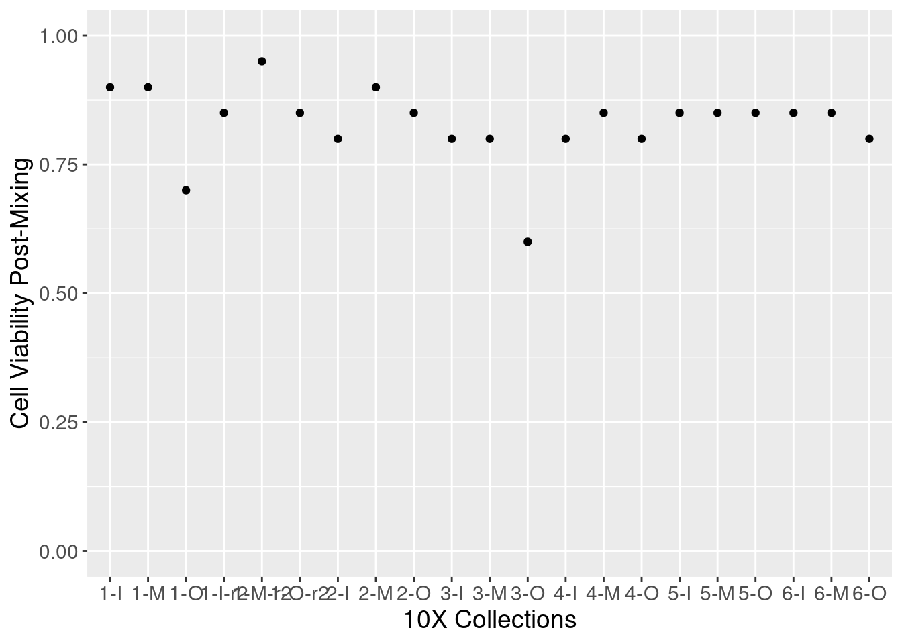

10x-view-batch-effects
Genevieve Housman
May 2021
Last updated: 2021-05-23
Checks: 6 1
Knit directory: human-chimp-skeletal-scRNA/
This reproducible R Markdown analysis was created with workflowr (version 1.6.2). The Checks tab describes the reproducibility checks that were applied when the results were created. The Past versions tab lists the development history.
The R Markdown file has unstaged changes. To know which version of the R Markdown file created these results, you’ll want to first commit it to the Git repo. If you’re still working on the analysis, you can ignore this warning. When you’re finished, you can run wflow_publish to commit the R Markdown file and build the HTML.
Great job! The global environment was empty. Objects defined in the global environment can affect the analysis in your R Markdown file in unknown ways. For reproduciblity it’s best to always run the code in an empty environment.
The command set.seed(20190719) was run prior to running the code in the R Markdown file. Setting a seed ensures that any results that rely on randomness, e.g. subsampling or permutations, are reproducible.
Great job! Recording the operating system, R version, and package versions is critical for reproducibility.
Nice! There were no cached chunks for this analysis, so you can be confident that you successfully produced the results during this run.
Great job! Using relative paths to the files within your workflowr project makes it easier to run your code on other machines.
Great! You are using Git for version control. Tracking code development and connecting the code version to the results is critical for reproducibility.
The results in this page were generated with repository version b242b73. See the Past versions tab to see a history of the changes made to the R Markdown and HTML files.
Note that you need to be careful to ensure that all relevant files for the analysis have been committed to Git prior to generating the results (you can use wflow_publish or wflow_git_commit). workflowr only checks the R Markdown file, but you know if there are other scripts or data files that it depends on. Below is the status of the Git repository when the results were generated:
Ignored files:
Ignored: .Rhistory
Ignored: .Rproj.user/
Untracked files:
Untracked: analysis/10x-plot-enrichment-gom.Rmd
Untracked: analysis/TODO_10x-data-4-classification-t2.Rmd
Untracked: analysis/TODO_10x-data-4-classification.Rmd
Untracked: analysis/TODO_10x-data-4-reclassification-tot.Rmd
Untracked: analysis/TODO_10x-data-5-diffexp.Rmd
Untracked: analysis/TODO_10x-data-6-conservexp.Rmd
Untracked: analysis/TODO_10x-data-6-cormotif-t2.Rmd
Untracked: analysis/TODO_10x-data-6-cormotif-tot.Rmd
Untracked: analysis/TODO_10x-data-6-variance-t2.Rmd
Untracked: analysis/TODO_10x-data-6-variance-tot.Rmd
Untracked: analysis/TODO_10x-data-7-enrichment.Rmd
Untracked: analysis/TODO_10x-data-8-batch-correlation.Rmd
Untracked: analysis/TODO_10x-plot-diffexp.Rmd
Untracked: analysis/TODO_10x-plot-replicate-correlation-t2.Rmd
Untracked: analysis/TODO_10x-plot-utf1-tac3.Rmd
Untracked: analysis/TODO_10x-view-species-assignments.Rmd
Untracked: analysis/TODO_10x-view-validation-data.Rmd
Untracked: analysis/v2/
Untracked: code/FindMarkers.R
Untracked: code/FindMarkers.sh
Untracked: code/FindMarkers_0.1.err
Untracked: code/FindMarkers_0.1.out
Untracked: code/FindMarkers_0.25.err
Untracked: code/FindMarkers_0.25.out
Untracked: code/FindMarkers_0.5.err
Untracked: code/FindMarkers_0.5.out
Untracked: code/FindMarkers_0.75.err
Untracked: code/FindMarkers_0.75.out
Untracked: code/FindMarkers_1.err
Untracked: code/FindMarkers_1.out
Untracked: code/GoM.R
Untracked: code/GoM.sh
Untracked: code/fastTopics.R
Untracked: code/fastTopics.sh
Untracked: code/fastTopicsBC.R
Untracked: code/fastTopicsBC.sh
Untracked: code/fastTopicsBC_3_tot.err
Untracked: code/fastTopicsBC_3_tot.out
Untracked: code/fastTopicsBC_4_tot.err
Untracked: code/fastTopicsBC_4_tot.out
Untracked: code/fastTopicsBC_5_tot.err
Untracked: code/fastTopicsBC_5_tot.out
Untracked: code/fastTopicsBC_6_tot.err
Untracked: code/fastTopicsBC_6_tot.out
Untracked: code/fastTopicsBC_7_tot.err
Untracked: code/fastTopicsBC_7_tot.out
Untracked: code/fastTopicsSpp.R
Untracked: code/fastTopicsSpp.sh
Untracked: code/fastTopicsSppBC.R
Untracked: code/fastTopicsSppBC.sh
Untracked: code/fastTopicsSppBC_3_tot.err
Untracked: code/fastTopicsSppBC_3_tot.out
Untracked: code/fastTopicsSppBC_4_tot.err
Untracked: code/fastTopicsSppBC_4_tot.out
Untracked: code/fastTopicsSppBC_5_tot.err
Untracked: code/fastTopicsSppBC_5_tot.out
Untracked: code/fastTopicsSppBC_6_tot.err
Untracked: code/fastTopicsSppBC_6_tot.out
Untracked: code/fastTopicsSppBC_7_tot.err
Untracked: code/fastTopicsSppBC_7_tot.out
Untracked: code/fastTopicsSpp_3_tot.err
Untracked: code/fastTopicsSpp_3_tot.out
Untracked: code/fastTopicsSpp_4_tot.err
Untracked: code/fastTopicsSpp_4_tot.out
Untracked: code/fastTopicsSpp_5_tot.err
Untracked: code/fastTopicsSpp_5_tot.out
Untracked: code/fastTopicsSpp_6_tot.err
Untracked: code/fastTopicsSpp_6_tot.out
Untracked: code/fastTopicsSpp_7_tot.err
Untracked: code/fastTopicsSpp_7_tot.out
Untracked: code/fastTopics_3_tot.err
Untracked: code/fastTopics_3_tot.out
Untracked: code/fastTopics_4_tot.err
Untracked: code/fastTopics_4_tot.out
Untracked: code/fastTopics_5_tot.err
Untracked: code/fastTopics_5_tot.out
Untracked: code/fastTopics_6_tot.err
Untracked: code/fastTopics_6_tot.out
Untracked: code/fastTopics_7_tot.err
Untracked: code/fastTopics_7_tot.out
Untracked: code/v2/
Untracked: data/HumanPrimaryCellAtlasData-SingleR
Untracked: data/HumanPrimaryCellAtlasDetails-SingleR.csv
Untracked: data/HumanPrimaryCellAtlasLabels-SingleR.csv
Untracked: data/alizarin-red-quant-total.csv
Untracked: data/cell_atlas_ref_panel
Untracked: data/cellranger-data-full/
Untracked: data/corrmatrix.ost
Untracked: data/de-data/
Untracked: data/facs-MSC-collection-summary-sample-avg.csv
Untracked: data/facs-MSC-collection-summary-species-avg.csv
Untracked: data/facs-MSC-collection-summary-total.csv
Untracked: data/gom-data/
Untracked: data/oil-red-quant-total.csv
Untracked: data/scrna-batch-reformat.csv
Untracked: data/scrna-batch.csv
Untracked: output/data-qc-post-subsets-batchcor.pdf
Untracked: output/data-qc-post-subsets-batchviz.pdf
Untracked: output/data-qc-postfilterC-subsets-batchcor.pdf
Untracked: output/data-qc-postfilterC-subsets-batchviz.pdf
Untracked: output/data-qc-postfilterC-subsets-int19k-batchcor.pdf
Untracked: output/data-qc-postfilterC-subsets-int19k-batchviz.pdf
Untracked: output/data-qc-postfilterC-subsets-int19k.reg-batchcor.pdf
Untracked: output/data-qc-postfilterC-subsets-int19k.reg-batchviz.pdf
Untracked: output/data-qc-postfilterC-subsets-intNo0-batchcor.pdf
Untracked: output/data-qc-postfilterC-subsets-intNo0-batchviz.pdf
Untracked: output/data-qc-postfilterC-subsets-intNo0.reg-batchcor.pdf
Untracked: output/data-qc-postfilterC-subsets-intNo0.reg-batchviz.pdf
Untracked: output/data-qc-postfilterC-subsets-merge-batchcor.pdf
Untracked: output/data-qc-postfilterC-subsets-merge-batchviz.pdf
Untracked: output/data-qc-postfilterC.pdf
Untracked: output/data-qc-postfilterL-subsets-batchcor.pdf
Untracked: output/data-qc-postfilterL-subsets-batchviz.pdf
Untracked: output/data-qc-postfilterL-subsets-intNo0.reg-batchcor.pdf
Untracked: output/data-qc-postfilterL-subsets-intNo0.reg-batchviz.pdf
Untracked: output/data-qc-postfilterL-subsets-merge-batchcor.pdf
Untracked: output/data-qc-postfilterL-subsets-merge-batchviz.pdf
Untracked: output/data-qc-postfilterL.pdf
Untracked: output/data-qc-prefilter.pdf
Untracked: output/markers0.05-I.data.filterC.log.indv-cell.intNo0.reg-tot.rds
Untracked: output/markers0.05-M.data.filterC.log.indv-cell.intNo0.reg-tot.rds
Untracked: output/markers0.05-O.data.filterC.log.indv-cell.intNo0.reg-tot.rds
Untracked: output/markers0.05.data.filterC.log.indv-cell.intNo0.reg-tot.rds
Untracked: output/markers0.1.data.filterC.log.indv-cell.intNo0.reg-tot.rds
Untracked: output/markers0.25.data.filterC.log.indv-cell.intNo0.reg-tot.rds
Untracked: output/markers0.5.data.filterC.log.indv-cell.intNo0.reg-tot.rds
Untracked: output/markers0.75.data.filterC.log.indv-cell.intNo0.reg-tot.rds
Untracked: output/markers1.data.filterC.log.indv-cell.intNo0.reg-tot.rds
Untracked: output/markersStage-I.data.filterC.log.indv-cell.intNo0.reg-tot.rds
Untracked: output/markersStage-M.data.filterC.log.indv-cell.intNo0.reg-tot.rds
Untracked: output/markersStage-O.data.filterC.log.indv-cell.intNo0.reg-tot.rds
Untracked: output/v1/
Untracked: output/v2/
Unstaged changes:
Deleted: analysis/10x-data-4-classification-t2.Rmd
Deleted: analysis/10x-data-4-classification.Rmd
Deleted: analysis/10x-data-5-diffexp.Rmd
Deleted: analysis/10x-data-6-conservexp.Rmd
Deleted: analysis/10x-data-6-cormotif-t2.Rmd
Deleted: analysis/10x-data-6-cormotif-tot.Rmd
Deleted: analysis/10x-data-6-variance-t2.Rmd
Deleted: analysis/10x-data-6-variance-tot.Rmd
Deleted: analysis/10x-data-7-enrichment.Rmd
Deleted: analysis/10x-data-8-batch-correlation.Rmd
Deleted: analysis/10x-plot-diffexp.Rmd
Deleted: analysis/10x-plot-replicate-correlation-t2.Rmd
Deleted: analysis/10x-plot-utf1-tac3.Rmd
Modified: analysis/10x-view-batch-effects.Rmd
Deleted: analysis/10x-view-species-assignments.Rmd
Deleted: analysis/10x-view-validation-data.Rmd
Deleted: analysis/asbmr2020-plots.Rmd
Deleted: analysis/ashg2020-plots.Rmd
Modified: analysis/index.Rmd
Deleted: analysis/temp-code.Rmd
Deleted: analysis/v1/index.Rmd
Deleted: analysis/v1/license.Rmd
Modified: code/DEdream.R
Deleted: code/DEdream_totcell.filter.pch20.fml1.nofc.bh_adhoc.err
Deleted: code/DEdream_totcell.filter.pch20.fml1.nofc.bh_adhoc.out
Deleted: code/DEdream_totcell.filter.pch20.fml1.nofc.bh_cluster.err
Deleted: code/DEdream_totcell.filter.pch20.fml1.nofc.bh_cluster.out
Deleted: code/DEdream_totcell.filter.pch20.fml1.nofc.bh_ostadhoc.err
Deleted: code/DEdream_totcell.filter.pch20.fml1.nofc.bh_ostadhoc.out
Deleted: code/DEdream_totcell.filter.pch20.fml1.nofc.bh_stage.err
Deleted: code/DEdream_totcell.filter.pch20.fml1.nofc.bh_stage.out
Deleted: code/DEdream_totcell.filter.pch20.fml2.nofc.bh_adhoc.err
Deleted: code/DEdream_totcell.filter.pch20.fml2.nofc.bh_adhoc.out
Deleted: code/DEdream_totcell.filter.pch20.fml2.nofc.bh_cluster.err
Deleted: code/DEdream_totcell.filter.pch20.fml2.nofc.bh_cluster.out
Deleted: code/DEdream_totcell.filter.pch20.fml2.nofc.bh_ostadhoc.err
Deleted: code/DEdream_totcell.filter.pch20.fml2.nofc.bh_ostadhoc.out
Deleted: code/DEdream_totcell.filter.pch20.fml2.nofc.bh_stage.err
Deleted: code/DEdream_totcell.filter.pch20.fml2.nofc.bh_stage.out
Deleted: code/DEdream_totcell.filter.pch20.fml3.nofc.bh_adhoc.err
Deleted: code/DEdream_totcell.filter.pch20.fml3.nofc.bh_adhoc.out
Deleted: code/DEdream_totcell.filter.pch20.fml3.nofc.bh_cluster.err
Deleted: code/DEdream_totcell.filter.pch20.fml3.nofc.bh_cluster.out
Deleted: code/DEdream_totcell.filter.pch20.fml3.nofc.bh_ostadhoc.err
Deleted: code/DEdream_totcell.filter.pch20.fml3.nofc.bh_ostadhoc.out
Deleted: code/DEdream_totcell.filter.pch20.fml3.nofc.bh_stage.err
Deleted: code/DEdream_totcell.filter.pch20.fml3.nofc.bh_stage.out
Deleted: code/DEdream_totcell.filter.pch20.fml4.nofc.bh_adhoc.err
Deleted: code/DEdream_totcell.filter.pch20.fml4.nofc.bh_adhoc.out
Deleted: code/DEdream_totcell.filter.pch20.fml4.nofc.bh_cluster.err
Deleted: code/DEdream_totcell.filter.pch20.fml4.nofc.bh_cluster.out
Deleted: code/DEdream_totcell.filter.pch20.fml4.nofc.bh_ostadhoc.err
Deleted: code/DEdream_totcell.filter.pch20.fml4.nofc.bh_ostadhoc.out
Deleted: code/DEdream_totcell.filter.pch20.fml4.nofc.bh_stage.err
Deleted: code/DEdream_totcell.filter.pch20.fml4.nofc.bh_stage.out
Deleted: code/DEdream_totcell.filter.pch20.fml5.nofc.bh_adhoc.err
Deleted: code/DEdream_totcell.filter.pch20.fml5.nofc.bh_adhoc.out
Deleted: code/DEdream_totcell.filter.pch20.fml5.nofc.bh_cluster.err
Deleted: code/DEdream_totcell.filter.pch20.fml5.nofc.bh_cluster.out
Deleted: code/DEdream_totcell.filter.pch20.fml5.nofc.bh_ostadhoc.err
Deleted: code/DEdream_totcell.filter.pch20.fml5.nofc.bh_ostadhoc.out
Deleted: code/DEdream_totcell.filter.pch20.fml5.nofc.bh_stage.err
Deleted: code/DEdream_totcell.filter.pch20.fml5.nofc.bh_stage.out
Deleted: code/DEdream_totcell.keepRep1.filter.pch20.fml1.nofc.bh_adhoc.err
Deleted: code/DEdream_totcell.keepRep1.filter.pch20.fml1.nofc.bh_adhoc.out
Deleted: code/DEdream_totcell.keepRep1.filter.pch20.fml1.nofc.bh_cluster.err
Deleted: code/DEdream_totcell.keepRep1.filter.pch20.fml1.nofc.bh_cluster.out
Deleted: code/DEdream_totcell.keepRep1.filter.pch20.fml1.nofc.bh_ostadhoc.err
Deleted: code/DEdream_totcell.keepRep1.filter.pch20.fml1.nofc.bh_ostadhoc.out
Deleted: code/DEdream_totcell.keepRep1.filter.pch20.fml1.nofc.bh_stage.err
Deleted: code/DEdream_totcell.keepRep1.filter.pch20.fml1.nofc.bh_stage.out
Deleted: code/DEdream_totcell.keepRep1.filter.pch20.fml5.nofc.bh_adhoc.err
Deleted: code/DEdream_totcell.keepRep1.filter.pch20.fml5.nofc.bh_adhoc.out
Deleted: code/DEdream_totcell.keepRep1.filter.pch20.fml5.nofc.bh_cluster.err
Deleted: code/DEdream_totcell.keepRep1.filter.pch20.fml5.nofc.bh_cluster.out
Deleted: code/DEdream_totcell.keepRep1.filter.pch20.fml5.nofc.bh_ostadhoc.err
Deleted: code/DEdream_totcell.keepRep1.filter.pch20.fml5.nofc.bh_ostadhoc.out
Deleted: code/DEdream_totcell.keepRep1.filter.pch20.fml5.nofc.bh_stage.err
Deleted: code/DEdream_totcell.keepRep1.filter.pch20.fml5.nofc.bh_stage.out
Deleted: code/DEdream_totcell.keepRep2.filter.pch20.fml1.nofc.bh_FALSE.out
Deleted: code/DEdream_totcell.keepRep2.filter.pch20.fml1.nofc.bh_adhoc.err
Deleted: code/DEdream_totcell.keepRep2.filter.pch20.fml1.nofc.bh_adhoc.out
Deleted: code/DEdream_totcell.keepRep2.filter.pch20.fml1.nofc.bh_cluster.err
Deleted: code/DEdream_totcell.keepRep2.filter.pch20.fml1.nofc.bh_cluster.out
Deleted: code/DEdream_totcell.keepRep2.filter.pch20.fml1.nofc.bh_ostadhoc.err
Deleted: code/DEdream_totcell.keepRep2.filter.pch20.fml1.nofc.bh_ostadhoc.out
Deleted: code/DEdream_totcell.keepRep2.filter.pch20.fml1.nofc.bh_stage.err
Deleted: code/DEdream_totcell.keepRep2.filter.pch20.fml1.nofc.bh_stage.out
Deleted: code/DEdream_totcell.keepRep2.filter.pch20.fml5.nofc.bh_adhoc.err
Deleted: code/DEdream_totcell.keepRep2.filter.pch20.fml5.nofc.bh_adhoc.out
Deleted: code/DEdream_totcell.keepRep2.filter.pch20.fml5.nofc.bh_cluster.err
Deleted: code/DEdream_totcell.keepRep2.filter.pch20.fml5.nofc.bh_cluster.out
Deleted: code/DEdream_totcell.keepRep2.filter.pch20.fml5.nofc.bh_ostadhoc.err
Deleted: code/DEdream_totcell.keepRep2.filter.pch20.fml5.nofc.bh_ostadhoc.out
Deleted: code/DEdream_totcell.keepRep2.filter.pch20.fml5.nofc.bh_stage.err
Deleted: code/DEdream_totcell.keepRep2.filter.pch20.fml5.nofc.bh_stage.out
Deleted: code/DEdream_totcell.pseudo.nofilter.fml1.nofc.bh_adhoc.err
Deleted: code/DEdream_totcell.pseudo.nofilter.fml1.nofc.bh_adhoc.out
Deleted: code/DEdream_totcell.pseudo.nofilter.fml1.nofc.bh_cluster.err
Deleted: code/DEdream_totcell.pseudo.nofilter.fml1.nofc.bh_cluster.out
Deleted: code/DEdream_totcell.pseudo.nofilter.fml1.nofc.bh_ostadhoc.err
Deleted: code/DEdream_totcell.pseudo.nofilter.fml1.nofc.bh_ostadhoc.out
Deleted: code/DEdream_totcell.pseudo.nofilter.fml1.nofc.bh_stage.err
Deleted: code/DEdream_totcell.pseudo.nofilter.fml1.nofc.bh_stage.out
Deleted: code/DEdream_totcell.subNum.filter.pch20.fml1.nofc.bh_adhoc.err
Deleted: code/DEdream_totcell.subNum.filter.pch20.fml1.nofc.bh_adhoc.out
Deleted: code/DEdream_totcell.subNum.filter.pch20.fml1.nofc.bh_cluster.err
Deleted: code/DEdream_totcell.subNum.filter.pch20.fml1.nofc.bh_cluster.out
Deleted: code/DEdream_totcell.subNum.filter.pch20.fml1.nofc.bh_ostadhoc.err
Deleted: code/DEdream_totcell.subNum.filter.pch20.fml1.nofc.bh_ostadhoc.out
Deleted: code/DEdream_totcell.subNum.filter.pch20.fml1.nofc.bh_stage.err
Deleted: code/DEdream_totcell.subNum.filter.pch20.fml1.nofc.bh_stage.out
Deleted: code/DEdream_totcell.subNum.filter.pch20.fml5.nofc.bh_adhoc.err
Deleted: code/DEdream_totcell.subNum.filter.pch20.fml5.nofc.bh_adhoc.out
Deleted: code/DEdream_totcell.subNum.filter.pch20.fml5.nofc.bh_cluster.err
Deleted: code/DEdream_totcell.subNum.filter.pch20.fml5.nofc.bh_cluster.out
Deleted: code/DEdream_totcell.subNum.filter.pch20.fml5.nofc.bh_ostadhoc.err
Deleted: code/DEdream_totcell.subNum.filter.pch20.fml5.nofc.bh_ostadhoc.out
Deleted: code/DEdream_totcell.subNum.filter.pch20.fml5.nofc.bh_stage.err
Deleted: code/DEdream_totcell.subNum.filter.pch20.fml5.nofc.bh_stage.out
Modified: code/DEdreamsubset.R
Deleted: code/DEedgeR_totcell.filter.pch20.fc.bh_adhoc.err
Deleted: code/DEedgeR_totcell.filter.pch20.fc.bh_adhoc.out
Deleted: code/DEedgeR_totcell.filter.pch20.fc.bh_cluster.err
Deleted: code/DEedgeR_totcell.filter.pch20.fc.bh_cluster.out
Deleted: code/DEedgeR_totcell.filter.pch20.fc.bh_ostadhoc.err
Deleted: code/DEedgeR_totcell.filter.pch20.fc.bh_ostadhoc.out
Deleted: code/DEedgeR_totcell.filter.pch20.fc.bh_stage.err
Deleted: code/DEedgeR_totcell.filter.pch20.fc.bh_stage.out
Deleted: code/DEedgeR_totcell.keepRep1.filter.pch20.fc.bh_adhoc.err
Deleted: code/DEedgeR_totcell.keepRep1.filter.pch20.fc.bh_adhoc.out
Deleted: code/DEedgeR_totcell.keepRep1.filter.pch20.fc.bh_cluster.err
Deleted: code/DEedgeR_totcell.keepRep1.filter.pch20.fc.bh_cluster.out
Deleted: code/DEedgeR_totcell.keepRep1.filter.pch20.fc.bh_ostadhoc.err
Deleted: code/DEedgeR_totcell.keepRep1.filter.pch20.fc.bh_ostadhoc.out
Deleted: code/DEedgeR_totcell.keepRep1.filter.pch20.fc.bh_stage.err
Deleted: code/DEedgeR_totcell.keepRep1.filter.pch20.fc.bh_stage.out
Deleted: code/DEedgeR_totcell.keepRep2.filter.pch20.fc.bh_adhoc.err
Deleted: code/DEedgeR_totcell.keepRep2.filter.pch20.fc.bh_adhoc.out
Deleted: code/DEedgeR_totcell.keepRep2.filter.pch20.fc.bh_cluster.err
Deleted: code/DEedgeR_totcell.keepRep2.filter.pch20.fc.bh_cluster.out
Deleted: code/DEedgeR_totcell.keepRep2.filter.pch20.fc.bh_ostadhoc.err
Deleted: code/DEedgeR_totcell.keepRep2.filter.pch20.fc.bh_ostadhoc.out
Deleted: code/DEedgeR_totcell.keepRep2.filter.pch20.fc.bh_stage.err
Deleted: code/DEedgeR_totcell.keepRep2.filter.pch20.fc.bh_stage.out
Deleted: code/DEedgeR_totcell.subNum.filter.pch20.fc.bh_adhoc.err
Deleted: code/DEedgeR_totcell.subNum.filter.pch20.fc.bh_adhoc.out
Deleted: code/DEedgeR_totcell.subNum.filter.pch20.fc.bh_cluster.err
Deleted: code/DEedgeR_totcell.subNum.filter.pch20.fc.bh_cluster.out
Deleted: code/DEedgeR_totcell.subNum.filter.pch20.fc.bh_ostadhoc.err
Deleted: code/DEedgeR_totcell.subNum.filter.pch20.fc.bh_ostadhoc.out
Deleted: code/DEedgeR_totcell.subNum.filter.pch20.fc.bh_stage.err
Deleted: code/DEedgeR_totcell.subNum.filter.pch20.fc.bh_stage.out
Staged changes:
Modified: analysis/10x-view-data-metrics.Rmd
Note that any generated files, e.g. HTML, png, CSS, etc., are not included in this status report because it is ok for generated content to have uncommitted changes.
These are the previous versions of the repository in which changes were made to the R Markdown (analysis/10x-view-batch-effects.Rmd) and HTML (docs/10x-view-batch-effects.html) files. If you’ve configured a remote Git repository (see ?wflow_git_remote), click on the hyperlinks in the table below to view the files as they were in that past version.
| File | Version | Author | Date | Message |
|---|---|---|---|---|
| Rmd | f918f2b | Genevieve Housman | 2020-08-12 | Starting ortho-exon v2 reanalysis |
| Rmd | 6e47142 | Genevieve Housman | 2020-05-20 | newfiles |
Viewing of Known Batch Effects in Overall Study Design
Data being examined come from 6 humans and 6 chimpanzees.
- GHO-1: H1-I + C1-I (iPSCs from H23555 and C8861)
- GHO-2: H1-M + C1-M (iPSC-derived MSCs from H23555 and C8861)
- GHO-4: H1-O + C1-O (iPSC-MSC-derived osteoblasts from H23555 and C8861)
- HOU-10: H1-I-r2 + C1-I-r2 (iPSCs from H23555 and C8861)
- HOU-12: H1-M-r2 + C1-M-r2 (iPSC-derived MSCs from H23555 and C8861)
- HOU-16: H1-O-r2 + C1-O-r2 (iPSC-MSC-derived osteoblasts from H23555 and C8861)
- HOU-1: H2-I + C2-I (iPSCs from H20157 and C3647)
- HOU-2: H2-M + C2-M (iPSC-derived MSCs from H20157 and C3647)
- HOU-4: H2-O + C2-O (iPSC-MSC-derived osteoblasts from H20157 and C3647)
- HOU-9: H3-I + C3-I (iPSCs from H28126 and C3649)
- HOU-11: H3-M + C3-M (iPSC-derived MSCs from H28126 and C3649)
- HOU-15: H3-O + C3-O (iPSC-MSC-derived osteoblasts from H28126 and C3649)
- HOU-5: H4-I + C4-I (iPSCs from H28834 and C40210)
- HOU-6: H4-M + C4-M (iPSC-derived MSCs from H28834 and C40210)
- HOU-8: H4-O + C4-O (iPSC-MSC-derived osteoblasts from H28834 and C40210)
- HOU-17: H5-I + C5-I (iPSCs from H21792 and C40280)
- HOU-19: H5-M + C5-M (iPSC-derived MSCs from H21792 and C40280)
- HOU-21: H5-O + C5-O (iPSC-MSC-derived osteoblasts from H21792 and C40280)
- HOU-18: H6-I + C6-I (iPSCs from H20961 and C3624)
- HOU-20: H6-M + C6-M (iPSC-derived MSCs from H20961 and C3624)
- HOU-22: H6-O + C6-O (iPSC-MSC-derived osteoblasts from H20961 and C3624)
library(Seurat)
library(dplyr)
library(stringi)
library(stringr)
library(ggplot2)
library(colorspace)
library(RColorBrewer)
library(tidyr)#Load batch info
batch.full <- read.csv(file='./data/scrna-batch.csv', header=TRUE, sep=",")
#Reformate batch data of interest
batch <- batch.full[,c(1:3,7:8,11:13,15:30,32:37)]
batch[,c(1:4,6,8,25,28)] <- lapply(batch[,c(1:4,6,8,25,28)], function(x) as.factor(x))
batch[,c(5,7,9:24,26:27,29:30)] <- lapply(batch[,c(5,7,9:24,26:27,29:30)], function(x) as.numeric(as.character(x)))
#batch[,c(8,25,28)] <- lapply(batch[,c(8,25,28)], function(x) as.Date(x, "%m/%d/%y"))
batch.sub <- batch[,c(5,7,9:24,26:27,29:30)]
colnames(batch.sub) [1] "Human_Age_in_Pool"
[2] "Chimp_Age_in_Pool"
[3] "Number_of_6wells_Used_Human"
[4] "X10X_Cell_Count_Prewash_Human"
[5] "X10X_Cell_Viability_Prewash_Human"
[6] "X10X_Cell_Count_Postwash_Human"
[7] "X10X_Cell_Viability_Postwash_Human"
[8] "X10X_Cell_Multiplication_Factor_for_Mixture_Human"
[9] "X10X_Cell_Volume_for_Mixture_Human"
[10] "Number_of_6wells_Used_Chimp"
[11] "X10X_Cell_Count_Prewash_Chimp"
[12] "X10X_Cell_Viability_Prewash_Chimp"
[13] "X10X_Cell_Count_Postwash_Chimp"
[14] "X10X_Cell_Viability_Postwash_Chimp"
[15] "X10X_Cell_Multiplication_Factor_for_Mixture_Chimp"
[16] "X10X_Cell_Volume_for_Mixture_Chimp"
[17] "X10X_Cell_Count_Postwash_Postmix"
[18] "X10X_Cell_Viability_Postwash_Postmix"
[19] "X10X_cDNA_Concentration_pg.uL"
[20] "X10X_cDNA_Average_Size_bp"
[21] "X10X_Library_Concentration_pg.uL"
[22] "X10X_Library_Average_Size_bp" Examine correlation among known batch effects
#Make correlation matrix
cov.cor <- matrix(ncol=ncol(batch.sub), nrow=ncol(batch),
dimnames=list(colnames(batch), colnames(batch.sub)))
i=1
while (i <= length(colnames(batch.sub))) {
j=1
while (j <= length(colnames(batch))) {
lm_result <- lm(batch.sub[,i] ~ batch[,j])
r2 <- summary(lm_result)$r.squared
cov.cor[j, i] <- r2
j=j+1
}
i=i+1
}
#Convert to long format to plot in ggplot2
cov.cor.df <- as.data.frame(cov.cor)
cov.cor.df$variable <- rownames(cov.cor.df)
cov.cor.df <- gather(cov.cor.df, key="batch", value="cor", -variable)
head(cov.cor.df)
#Plot heatmap
cov.cor.df$variable <- factor(cov.cor.df$variable,
levels = c("Pooled_Sample_Name",
"Batch",
"Cell_Type",
"Human_Sex_in_Pool",
"Chimp_Sex_in_Pool",
"Date_of_10X_Collection",
"Date_of_10X_cDNA_Synthesis",
"Date_of_10X_Library_Prep",
"Human_Age_in_Pool",
"Chimp_Age_in_Pool",
"Number_of_6wells_Used_Human",
"X10X_Cell_Count_Prewash_Human",
"X10X_Cell_Viability_Prewash_Human",
"X10X_Cell_Count_Postwash_Human",
"X10X_Cell_Viability_Postwash_Human",
"X10X_Cell_Multiplication_Factor_for_Mixture_Human",
"X10X_Cell_Volume_for_Mixture_Human",
"Number_of_6wells_Used_Chimp",
"X10X_Cell_Count_Prewash_Chimp",
"X10X_Cell_Viability_Prewash_Chimp",
"X10X_Cell_Count_Postwash_Chimp",
"X10X_Cell_Viability_Postwash_Chimp",
"X10X_Cell_Multiplication_Factor_for_Mixture_Chimp",
"X10X_Cell_Volume_for_Mixture_Chimp",
"X10X_Cell_Count_Postwash_Postmix",
"X10X_Cell_Viability_Postwash_Postmix",
"X10X_cDNA_Concentration_pg.uL",
"X10X_cDNA_Average_Size_bp",
"X10X_Library_Concentration_pg.uL",
"X10X_Library_Average_Size_bp"),
labels = c("Pooled_Sample_Name",
"Batch","Cell_Type",
"Human_Sex_in_Pool",
"Chimp_Sex_in_Pool",
"Date_of_10X_Collection",
"Date_of_10X_cDNA_Synthesis",
"Date_of_10X_Library_Prep",
"Human_Age_in_Pool",
"Chimp_Age_in_Pool",
"Number_of_6wells_Used_Human",
"X10X_Cell_Count_Prewash_Human",
"X10X_Cell_Viability_Prewash_Human",
"X10X_Cell_Count_Postwash_Human",
"X10X_Cell_Viability_Postwash_Human",
"X10X_Cell_Multiplication_Factor_for_Mixture_Human",
"X10X_Cell_Volume_for_Mixture_Human",
"Number_of_6wells_Used_Chimp",
"X10X_Cell_Count_Prewash_Chimp",
"X10X_Cell_Viability_Prewash_Chimp",
"X10X_Cell_Count_Postwash_Chimp",
"X10X_Cell_Viability_Postwash_Chimp",
"X10X_Cell_Multiplication_Factor_for_Mixture_Chimp",
"X10X_Cell_Volume_for_Mixture_Chimp",
"X10X_Cell_Count_Postwash_Postmix",
"X10X_Cell_Viability_Postwash_Postmix",
"X10X_cDNA_Concentration_pg.uL",
"X10X_cDNA_Average_Size_bp",
"X10X_Library_Concentration_pg.uL",
"X10X_Library_Average_Size_bp"))
cov.cor.df$batch <- factor(cov.cor.df$batch,
levels = c("Human_Age_in_Pool",
"Chimp_Age_in_Pool",
"Number_of_6wells_Used_Human",
"X10X_Cell_Count_Prewash_Human",
"X10X_Cell_Viability_Prewash_Human",
"X10X_Cell_Count_Postwash_Human",
"X10X_Cell_Viability_Postwash_Human",
"X10X_Cell_Multiplication_Factor_for_Mixture_Human",
"X10X_Cell_Volume_for_Mixture_Human",
"Number_of_6wells_Used_Chimp",
"X10X_Cell_Count_Prewash_Chimp",
"X10X_Cell_Viability_Prewash_Chimp",
"X10X_Cell_Count_Postwash_Chimp",
"X10X_Cell_Viability_Postwash_Chimp",
"X10X_Cell_Multiplication_Factor_for_Mixture_Chimp",
"X10X_Cell_Volume_for_Mixture_Chimp",
"X10X_Cell_Count_Postwash_Postmix",
"X10X_Cell_Viability_Postwash_Postmix",
"X10X_cDNA_Concentration_pg.uL",
"X10X_cDNA_Average_Size_bp",
"X10X_Library_Concentration_pg.uL",
"X10X_Library_Average_Size_bp"),
labels = c("Human_Age_in_Pool",
"Chimp_Age_in_Pool",
"Number_of_6wells_Used_Human",
"X10X_Cell_Count_Prewash_Human",
"X10X_Cell_Viability_Prewash_Human",
"X10X_Cell_Count_Postwash_Human",
"X10X_Cell_Viability_Postwash_Human",
"X10X_Cell_Multiplication_Factor_for_Mixture_Human",
"X10X_Cell_Volume_for_Mixture_Human",
"Number_of_6wells_Used_Chimp",
"X10X_Cell_Count_Prewash_Chimp",
"X10X_Cell_Viability_Prewash_Chimp",
"X10X_Cell_Count_Postwash_Chimp",
"X10X_Cell_Viability_Postwash_Chimp",
"X10X_Cell_Multiplication_Factor_for_Mixture_Chimp",
"X10X_Cell_Volume_for_Mixture_Chimp",
"X10X_Cell_Count_Postwash_Postmix",
"X10X_Cell_Viability_Postwash_Postmix",
"X10X_cDNA_Concentration_pg.uL",
"X10X_cDNA_Average_Size_bp",
"X10X_Library_Concentration_pg.uL",
"X10X_Library_Average_Size_bp")) ggplot(cov.cor.df, aes(x=batch, y=variable, fill=cor)) +
geom_tile(color="white") +
scale_fill_gradient(low="white", high="darkgrey", limits=c(0, 1)) +
labs(title="Correlation between known batch effects", x="", y="") +
theme(axis.text.x=element_text(angle=90, hjust=1))
Examine cell viability information
batch.full$Pooled_Sample_Name <- factor(batch.full$Pooled_Sample_Name,
levels = c("1-I","1-M","1-O",
"1-I-r2","1-M-r2","1-O-r2",
"2-I","2-M","2-O",
"3-I","3-M","3-O",
"4-I","4-M","4-O",
"5-I","5-M","5-O",
"6-I","6-M","6-O"),
labels = c("1-I","1-M","1-O",
"1-I-r2","1-M-r2","1-O-r2",
"2-I","2-M","2-O",
"3-I","3-M","3-O",
"4-I","4-M","4-O",
"5-I","5-M","5-O",
"6-I","6-M","6-O"))#postmix viabilities for each collection
ggplot(batch.full, aes(x=Pooled_Sample_Name, y=X10X_Cell_Viability_Postwash_Postmix)) +
geom_point() +
ylim(0,1) +
labs(x="10X Collections", y="Cell Viability Post-Mixing") +
theme(text=element_text(size=14)) 
#postmix viabilities for each cell type
ggplot(batch.full, aes(x=Cell_Type, y=X10X_Cell_Viability_Postwash_Postmix)) +
geom_boxplot() +
ylim(0,1) +
labs(x="", y="Cell Viability Post-Mixing") +
theme(text=element_text(size=14)) #make data frame for human and chimp sample plotting
h.batch.full <- batch.full[,c(1:8,13:21)]
c.batch.full <- batch.full[,c(1:4,9:12,13:14,22:28)]
headings <- c("Pooled_Sample_Name",
"Batch","Cell_Type",
"Sample_Name_at_Core",
"Sample_in_Pool",
"Individual_in_Pool",
"Sex_in_Pool",
"Age_in_Pool",
"Date_of_10X_Collection",
"X10X_Collection_Researcher",
"Number_of_6wells_Used",
"X10X_Cell_Count_Prewash",
"X10X_Cell_Viability_Prewash",
"X10X_Cell_Count_Postwash",
"X10X_Cell_Viability_Postwash",
"X10X_Cell_Multiplication_Factor_for_Mixture_Human",
"X10X_Cell_Volume_for_Mixture_Human")
names(h.batch.full) <- headings
names(c.batch.full) <- headings
batch.sub <- rbind(h.batch.full, c.batch.full)
rm(h.batch.full,c.batch.full,headings)
batch.sub$Individual_in_Pool <- factor(batch.sub$Individual_in_Pool,
levels = c("H23555","H20157","H28126",
"H28834","H21792","H20961",
"C8861","C3647","C3649",
"C40210","C40280","C3624"),
labels = c("H23555","H20157","H28126",
"H28834","H21792","H20961",
"C8861","C3647","C3649",
"C40210","C40280","C3624"))
batch.sub$Species <- c(rep("Human",21),rep("Chimp",21))
batch.sub$Species <- factor(batch.sub$Species, levels=c("Human","Chimp"), labels=c("Human","Chimp"))#premix viabilities for each sample
ggplot(batch.sub, aes(x=Individual_in_Pool, y=X10X_Cell_Viability_Postwash)) +
geom_point() +
facet_grid(Cell_Type~.) +
ylim(0,1) +
labs(x="Samples", y="Cell Viability Pre-Mixing") +
theme(text=element_text(size=14)) #premix viabilities for each cell type and species
ggplot(batch.sub, aes(x=Cell_Type, y=X10X_Cell_Viability_Postwash, fill=Species)) +
geom_boxplot() +
ylim(0,1) +
labs(x="", y="Cell Viability Pre-Mixing") +
theme(text=element_text(size=14)) +
scale_fill_manual(values=c("grey30","grey70"))
sessionInfo()R version 3.6.1 (2019-07-05)
Platform: x86_64-pc-linux-gnu (64-bit)
Running under: Scientific Linux 7.4 (Nitrogen)
Matrix products: default
BLAS/LAPACK: /software/openblas-0.2.19-el7-x86_64/lib/libopenblas_haswellp-r0.2.19.so
locale:
[1] LC_CTYPE=en_US.UTF-8 LC_NUMERIC=C
[3] LC_TIME=en_US.UTF-8 LC_COLLATE=en_US.UTF-8
[5] LC_MONETARY=en_US.UTF-8 LC_MESSAGES=en_US.UTF-8
[7] LC_PAPER=en_US.UTF-8 LC_NAME=C
[9] LC_ADDRESS=C LC_TELEPHONE=C
[11] LC_MEASUREMENT=en_US.UTF-8 LC_IDENTIFICATION=C
attached base packages:
[1] stats graphics grDevices utils datasets methods base
other attached packages:
[1] tidyr_1.1.2 RColorBrewer_1.1-2 colorspace_2.0-0
[4] ggplot2_3.3.2 stringr_1.4.0 stringi_1.4.3
[7] dplyr_1.0.2 Seurat_3.1.3
loaded via a namespace (and not attached):
[1] tsne_0.1-3 nlme_3.1-140 bitops_1.0-6
[4] fs_1.3.1 RcppAnnoy_0.0.12 httr_1.4.2
[7] rprojroot_2.0.2 sctransform_0.2.0 tools_3.6.1
[10] R6_2.5.0 irlba_2.3.3 KernSmooth_2.23-15
[13] uwot_0.1.5 lazyeval_0.2.2 withr_2.3.0
[16] npsurv_0.4-0 gridExtra_2.3 tidyselect_1.1.0
[19] compiler_3.6.1 git2r_0.26.1 plotly_4.9.2.1
[22] labeling_0.4.2 caTools_1.17.1.2 scales_1.1.1
[25] lmtest_0.9-37 ggridges_0.5.1 pbapply_1.4-0
[28] rappdirs_0.3.1 digest_0.6.27 rmarkdown_1.13
[31] pkgconfig_2.0.3 htmltools_0.5.0 bibtex_0.4.2
[34] htmlwidgets_1.5.2 rlang_0.4.9 farver_2.0.3
[37] generics_0.1.0 zoo_1.8-6 jsonlite_1.7.1
[40] ica_1.0-2 gtools_3.8.1 magrittr_2.0.1
[43] Matrix_1.2-18 Rcpp_1.0.5 munsell_0.5.0
[46] ape_5.4-1 reticulate_1.16 lifecycle_0.2.0
[49] whisker_0.3-2 yaml_2.2.1 gbRd_0.4-11
[52] MASS_7.3-51.4 gplots_3.0.1.1 Rtsne_0.15
[55] plyr_1.8.4 grid_3.6.1 parallel_3.6.1
[58] gdata_2.18.0 listenv_0.7.0 promises_1.1.1
[61] ggrepel_0.8.2 crayon_1.3.4 lattice_0.20-38
[64] cowplot_1.1.0 splines_3.6.1 knitr_1.23
[67] pillar_1.4.7 igraph_1.2.4.1 reshape2_1.4.3
[70] future.apply_1.3.0 codetools_0.2-16 leiden_0.3.1
[73] glue_1.4.2 evaluate_0.14 lsei_1.2-0
[76] metap_1.1 RcppParallel_5.0.2 data.table_1.13.2
[79] png_0.1-7 vctrs_0.3.5 httpuv_1.5.1
[82] Rdpack_0.11-0 gtable_0.3.0 RANN_2.6.1
[85] purrr_0.3.4 future_1.14.0 xfun_0.8
[88] rsvd_1.0.1 later_1.1.0.1 survival_2.44-1.1
[91] viridisLite_0.3.0 tibble_3.0.4 workflowr_1.6.2
[94] cluster_2.1.0 globals_0.12.4 fitdistrplus_1.0-14
[97] ellipsis_0.3.1 ROCR_1.0-7